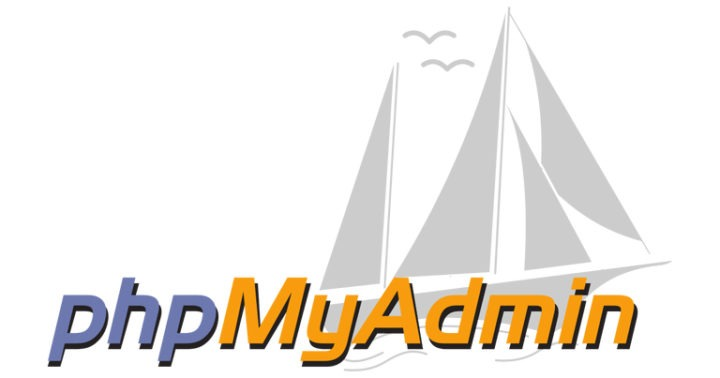
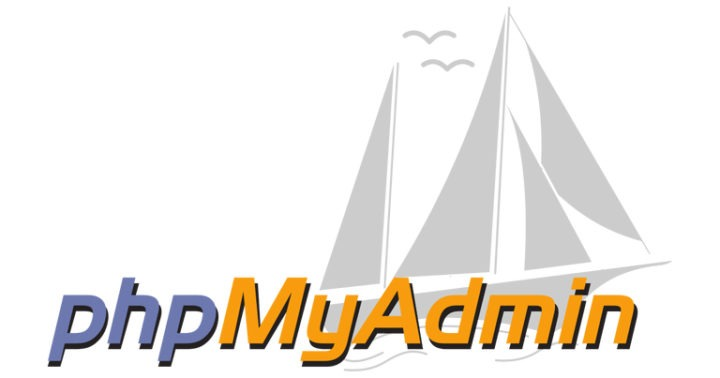

Webdesigneuse - Intégratrice
Je suis actuellement chef de projet à l'agence Blackbird et souhaiterais
approfondir mes connaissances et mon expérience dans le Webdesign de plus que l'intégration. Je fais partie de l'équipe développement au sein du master CAWEB et m'occupe de la refonte du site du master en équipe.
Je recherche un apprentissage à partir de 2019 en tant qu'intégratrice dans le cadre de la formation en Webdesig à la MJM - Strasbourg
Compétences
- Gesion de projet
- Communication
- Gestion & Organisation
- Adaptabilité : réactivité & prise de décision
- Prévention des risques
- Méthode de gestion de projet agile : Scrum et Kanban
- Français : langue maternelle
- Anglais : courant
- TOEFL iBT (2017) : 97/120
- Japonais : avancé
- JLPT N3 (B2)
- Allemand : conversationnel
- B1 Zertifikat
Logiciels
- Certifications
- Hootsuite - utilisation de l'outil de gestion de Réseaux Sociaux
- SDL Trados Studio 2017 pour les traducteurs - Niveau débutant
- Certification Google Analytics - débutant
Expérience professionnelle
Développeuse / intégratrice
Master Caweb - Strabsourg, France
1er Décembre 2018 - 31 mai 2019
Refonte du site du Master Caweb sous Wordpress.
Création des différents types de contenus à l'aide de templates php et de plugins
Intégration CSS de certains blocs
Chef de projet
Blackbird Agency - Strabsourg, France
2 Juillet - Juin 2019
Planification, suivi et gestion des risques de projets multiples
Communication régulière avec les clients et interprétation de ses besoins
Gestion du Store Blackbird et à la stratégie de vente des extensions
Développeuse / Chef de projet
Le French Riz - Strabsourg, France
1 février - 15 juin 2019
Dans le cadre d'un stage en 1ère année de Master Caweb, développement du site web du restaurant Le French Riz sous Wordpress.
Intégration des maquettes faites par la graphiste de l'équipe
Localisation du site en japonais
Plus d'expérience
Responsable Accompagnateur
Groupe Nacel, Grantham, Angleterre
23 - 29 Avril 2018
Accompagnement en Angleterre d'un groupe d'enfants de 14 à 16 ans. Assurer la cohésion de l’équipe d’animateurs et de la direction
locale ainsi que la liaison entre le groupe et NACEL. Gestion des imprévus au cours du voyage. Rédaction d’un rapport de fin de séjour.
Fille Au pair
Munich, Allemagne
4 Février 2017 - 15 juillet 2017
Garde de trois garçons entre 3 et 9 ans, entièrement intégrée à une famille allemande.
Cours d'allemand intensifs le matin.
Hôtesse de Caisse
E.Leclerc - Saint-Paul-lès-Romans, France
1 Juillet - 31 Aôut 2013 & 2015
Accueil & encaissement des clients
Formation
Master CAWEB - Création et Gestion de sites web multilingues
Strabsourg, France
Septembre 2017 - Septembre 2019
Développement : HTML, CSS, PHP, Javascript & Jquery, bases de données, git CMS Wordpress (principalement), Drupal, Prestashop, Magento.
Création de contenus : Photoshop, Illustrator, Indesign, Premiere
Formation en Ergonomie, UI/UX
Localisation & Traduction : Anglais - Japonais, logiciel de TAO, terminologie
Echange Universitaire
Université Grenoble Alpes & Université de Kyushu, Fukuoka, Japon
24 Septembre 2015 - 6 Août 2016
Cours de Japonais intensif (10h/semaine)
Cours en anglais : économie, politique, linguistique, histoire du Japon, etc.
Adaptation au mode de vie japonais, indépendance et autonomie.
Licence Langues Etrangères Appliquées - anglais & japonais
Université Grenoble Alpes & Université de Kyushu, Fukuoka, Japon
Septembre 2012 - Août 2016
Cours d'anglais et japonais intensif : civilisation, oral, grammaire.
Cours d'économie : économie, monnaie et société, management, marketing, etc.
Module transversal : analyse de l'image et du récit filmique, histoire de l'audiovisuel, média culturel
Loisirs
- Créatifs
- Piano & solfège : pratique depuis 15 ans,
- Cuisine : créations de recettes
- Cosplay
- Minimalisme
- Sportifs
- Kung fu : pratique depuis 10 ans
- Yoga & pilates : pratique depuis 4 ans


")
 
